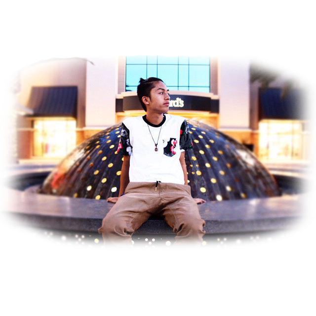

I am an aspiring photographer hoping to learn new and creative ways to take pictures. I’ve always had an interest in taking pictures ever since I was young. My family has also taken photography into their hobbies and from that, they have taught me everything I know about it. At the age of 16, I bought my first camera, the T3i Rebel. By taking pictures, I have come to notice how beautiful the world is. Photography makes you notice tiny details in your surroundings and it gives you a new perspective of things. I believe photography is a great learning experience that everyone should take. Taking pictures is and always will be one of my favorite things to do. ~ Nathan Martinez
